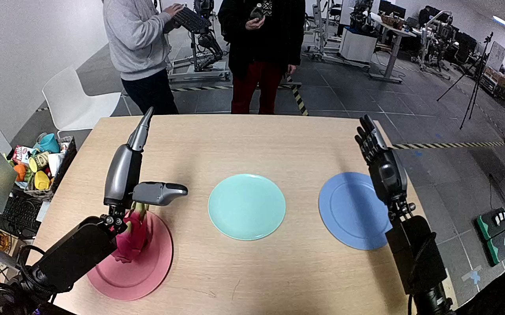

NVIDIA GR1 · 4
Video 4

Visual review action_review.json
{
"prompt_protocol": "humanoid_action_v1",
"prompt_provenance": "visually_authored_from_video_and_initial_frame",
"reviewed_contact_sheets": [
"sheet_001.jpg"
],
"inspected_frame_stride": 2,
"inspected_sampled_frame_count": 60,
"observed_sequence": [
{
"frame_start": 0,
"frame_end": 35,
"action": "The left hand is open above and beside the upright dragonfruit on the pink plate, then lowers toward the fruit. The right hand remains open and elevated beside the blue plate.",
"confidence": "high"
},
{
"frame_start": 36,
"frame_end": 69,
"action": "The left hand descends around the fruit and curls its fingers and thumb around opposite sides; the dragonfruit remains on the pink plate while the grasp forms.",
"confidence": "high"
},
{
"frame_start": 70,
"frame_end": 89,
"action": "The left hand lifts the dragonfruit clear of the pink plate and starts moving it inward toward the teal plate.",
"confidence": "high"
},
{
"frame_start": 90,
"frame_end": 111,
"action": "The left arm carries the held dragonfruit over the teal plate and lowers it toward the plate; the pink plate is empty.",
"confidence": "high"
},
{
"frame_start": 112,
"frame_end": 119,
"action": "The fruit settles onto its side on the teal plate. The left fingers extend and the thumb opens outward to release it; the hand remains close beside the fruit at the ending.",
"confidence": "high"
}
],
"arm_hand_roles": {
"left": "Sole manipulating hand: encloses dragonfruit, lifts it from pink plate, carries and lowers it onto teal plate, then opens fingers while remaining beside the placed fruit.",
"right": "Open elevated hand beside blue plate throughout, with minor posture drift; does not touch the fruit or support the left-hand transfer.",
"coordination": "One-hand transfer without hand-to-hand exchange or coordinated support."
},
"anatomical_side_evidence": {
"evidence": "Robot-centered forward-looking view has both forearms entering from the camera-near lower body sides. The manipulating hand has its thumb on the medial/right side of its dorsal hand in the initial PNG, consistent with the robot-relative left hand; the opposite hand has mirrored thumb/finger orientation. This uses hand chirality and connected forearm origins, not image side alone.",
"confidence": "high",
"limitation": "Shoulder attachments and torso are outside the field of view."
},
"initial_scene": "Upright magenta dragonfruit with green tips on the pink plate beside the open left hand; empty teal plate between pink and blue plates. Right hand is open above the blue-plate side.",
"evidence_frame_indices": [
0,
36,
64,
86,
96,
108,
114,
117,
119
],
"initial_frame_inspected": true,
"inspection_coverage": "Viewed the complete contact sheet covering all 60 stride-two samples (0 through 118), source initial PNG and eight native transition/final frames.",
"terminal_state": "Dragonfruit lies sideways on the teal plate. Left fingers and thumb are open beside it; the hand has not withdrawn fully. Pink plate is empty; right hand remains elevated and uninvolved.",
"selected_execution_status": "success",
"uncertainties": [
"Precise underside contact with the teal plate is partly hidden by the fruit and left hand during lowering; the final sideways resting fruit and opened digits establish placement/release. Shoulder attachments are not visible, but forearm origins and thumb chirality establish anatomical left/right."
],
"annotation_discrepancies": [],
"video_id": "4",
"dataset": "NVIDIA_GR1_100",
"dedicated_review_agent": "review_gr1_4",
"review_source_video": "NVIDIA_GR1_100/4/original/original.mp4",
"source_frame_count": 120,
"source_fps": 20.0,
"native_detail_frames": [
36,
64,
86,
96,
108,
114,
117,
119
],
"world_model_prompt": "The robot closes its left hand around the dragonfruit on the pink plate, lifts it, and carries it to the teal plate. It lowers the fruit onto the teal plate and opens its fingers, leaving the fruit lying on its side with the left hand still beside it. Keep the camera fixed; preserve robot geometry, physically valid joint motion, and normal gripper opening and closing.",
"original_task_instruction": "Use the left hand to pick up dragonfruit from pink plate to teal plate.",
"selected_segment": {
"start_frame": 0,
"end_frame_exclusive": 120,
"reason": "Complete original single-task reference; no cropping or trimming requested."
},
"source_video_sha256": "e9aa2518403a995b6fe1a22f3c7b1aa8f23170e52360e91d9f0a95f6804db09c",
"review_completed_at": "2026-10-13T18:03:45.871686+00:00"
}